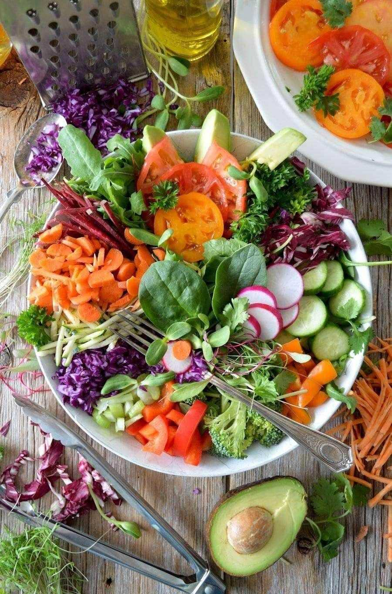
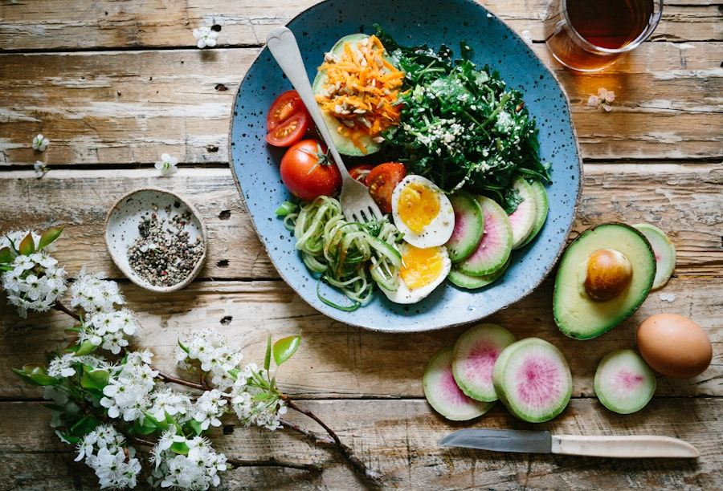
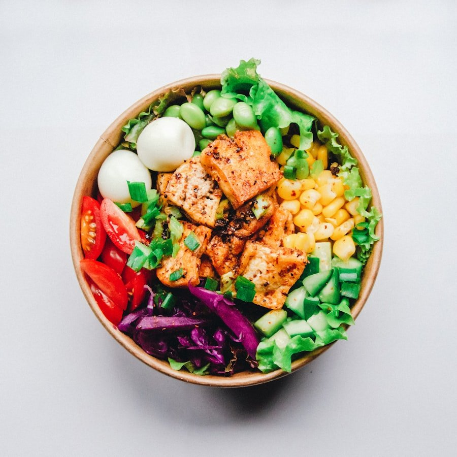
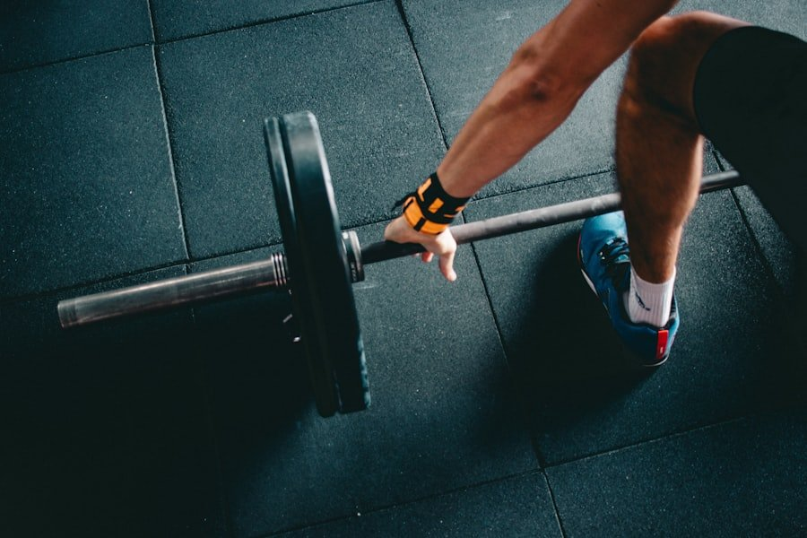

단순히 먹는 양을 줄이는 극단적인 절식 다이어트와 달리, '언제 먹고 언제 쉴 것인가'를 조절하여 몸의 호르몬 스위치를 켜는 간헐적 단식(Intermittent Fasting) 16:8 방식이 전 세계적인 건강 트렌드로 확고히 자리 잡았습니다.
하루 24시간 중 16시간 동안 공복을 유지하고 남은 8시간 동안 균형 잡힌 영양을 섭취하는 16:8 단식은, 인슐린 저항성을 개선하고 노화된 세포를 스스로 청소하는 오토파지(Autophagy, 자가포식) 반응을 유도하여 체지방 감량과 대사 건강 회복에 탁월한 효과를 발휘합니다.
하지만 잘못된 방식으로 무작정 굶거나 단식 후 보상 심리로 폭식을 하게 되면 근손실과 극심한 두통, 요요 현상을 겪기 쉽습니다. 초보자도 실패 없이 성공할 수 있는 과학적인 16:8 단식 메커니즘과 직장인 맞춤 시간표, 첫 끼니 식단법 및 5대 부작용 예방 수칙을 완벽히 정리해 드립니다.
1. 간헐적 단식 16:8 원리와 오토파지 효과
우리가 음식을 섭취하면 췌장에서 인슐린(Insulin)이 분비되어 포도당을 에너지로 사용하고 남은 잉여 에너지를 지방으로 저장합니다. 반대로 마지막 식사 후 공복 상태가 12시간 이상 지속되면 혈중 인슐린 수치가 최저로 떨어지면서 체내 저장된 글리코겐이 고갈되고 지방을 주 에너지원으로 태우는 '케토시스(Ketosis)' 스위치가 켜집니다.
특히 단식 16시간째에 접어들면 2016년 노벨 생리의학상을 수상한 오토파지(Autophagy, 자가포식) 현상이 극대화됩니다. 이는 세포가 체내의 손상된 단백질 쓰레기와 병든 미토콘드리아를 스스로 분해하여 새로운 에너지원으로 재활용하는 '세포 리셋 청소 과정'으로, 만성 염증 억제와 뇌 신경세포 재생, 면역력 강화에 결정적인 역할을 합니다.

2. 직장인 & 주부 맞춤 최적 식사 시간표
16:8 단식의 가장 큰 장점은 자신의 생활 리듬에 맞춰 식사 창구(Eating Window) 8시간을 유연하게 설정할 수 있다는 점입니다.

3. 첫 끼니 식사법과 혈당 스파이크 방지 요령
16시간 공복 후 맞이하는 '첫 끼니(Break-fast)'의 음식 구성은 단식 전체의 성패를 가르는 가장 중요한 단계입니다.
공복 상태가 길었던 인체는 영양소를 스펀지처럼 빠르게 흡수하려 합니다. 이때 첫 입으로 라면, 빵, 떡볶이 등 단순 정제 탄수화물을 섭취하면 인슐린이 폭발적으로 분비되는 혈당 스파이크(Blood Sugar Spike)가 발생하여 극심한 식곤증과 오후의 가짜 배고픔을 유발합니다.
따라서 첫 끼니는 반드시 '식이섬유(채소 샐러드) ➔ 양질의 단백질 및 지방(달걀, 닭가슴살, 생선) ➔ 복합 탄수화물(현미밥, 귀리, 고구마)' 순서로 꼭꼭 씹어 섭취하여 혈당 상승 곡선을 완만하게 통제해야 합니다.

4. 간헐적 단식 vs 일반 절식 비교 분석표
하루 종일 굶거나 극단적으로 적게 먹는 일반 칼로리 절식과 16:8 간헐적 단식의 과학적 차이점입니다.
| 구분 | 16:8 간헐적 단식 | 일반 칼로리 절식 | 기대 효과 |
|---|---|---|---|
| 인슐린 상태 | 16시간 동안 최저 수준 유지 | 하루 종일 수시로 분비 | 체지방 연소 효율 극대화 |
| 기초대사량 | 성장호르몬 분비로 대사 보존 | 절식 지속 시 대사량 저하 | 요요 현상 원천 차단 |
| 세포 재생 | 오토파지 활성으로 염증 제거 | 자가포식 자극 미미 | 피부 탄력 및 항노화 |
| 지속 가능성 | 8시간 동안 든든한 식사 가능 | 만성 허기감으로 중도 포기 | 평생 유지 가능한 습관 형성 |

5. 초보자가 꼭 챙겨야 할 5대 부작용 예방 수칙
단식 초기에 발생할 수 있는 부작용을 사전에 예방하고 안전하게 몸을 적응시키는 5가지 핵심 원칙입니다.
공복 시 수분과 나트륨 배출이 빠르므로 물 2리터와 소금 한 꼬집으로 두통을 예방합니다.
식사 8시간 동안 체중당 1.2g의 순수 단백질을 채워 근육 손실을 확실하게 방지합니다.
단식을 마쳤다고 고칼로리 배달음식을 과식하지 않고, 정갈한 일반식을 규칙적으로 섭취합니다.
위염이나 역류성 식도염이 있다면 공복 아메리카노를 물에 연하게 희석해서 마십니다.
극심한 현기증이나 손떨림이 올 때는 즉시 미음을 섭취하고 14:10 단식으로 완화합니다.
6. 자주 묻는 질문 (FAQ)
마치며: 내 몸의 시계를 맞추는 건강한 습관
간헐적 단식은 단기간에 몸무게를 줄이기 위한 가혹한 다이어트가 아니라, 24시간 쉬지 않고 일하던 지친 위장과 소화기관에 온전한 쉼을 선물하는 라이프스타일 웰니스입니다.
내일 아침 늦은 첫 끼니부터 시작하여, 16시간 동안 깨끗해진 내 몸의 맑은 활력과 가벼워진 몸 상태를 직접 경험해 보세요.
* 대한당뇨병학회(KDA) 인슐린 저항성 개선 및 식사 요법 가이드